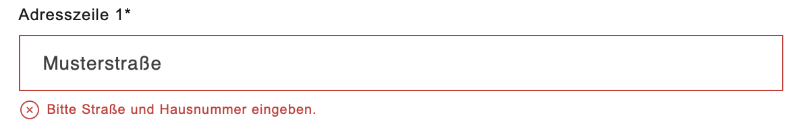
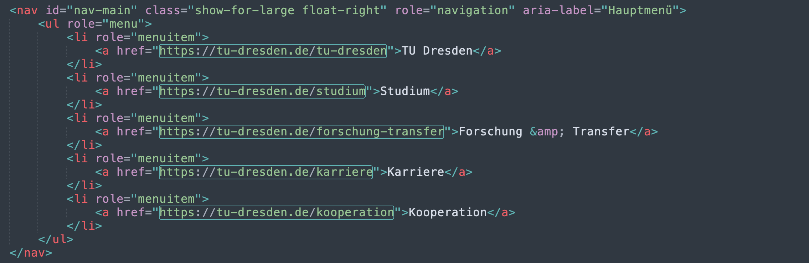
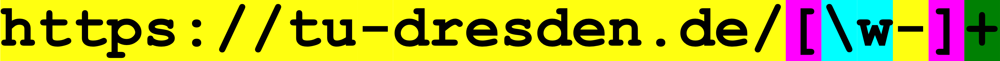

Reguläre Ausdrücke / RegEx#
In diesem Notebook lernen wir sog. Reguläre Ausdrücke (engl.: regular expressions, abgekürzt: RegEx) kennen. RegEx bezeichnet eine sehr leistungsfähige Suchsprache, die es uns erlaubt, komplexe, abstrakte Muster zum Suchen zu verwenden, anstatt bloß literaler (wörtlicher) Suchbegriffe (z. B. ein bestimmtes Wort, nach welchem wir einen Text durchsuchen). Um das zu veranschaulichen und gleichzeitig den immensen Nutzen von RegEx herauszuarbeiten, nähern wir uns dem Thema über zwei Beispiele von konkreten Anwendungen.
Beispiel 1: Inputvalidierung#
Beim Ausfüllen von Formularen auf einer Webseite, z. B. beim Bestellen in einem Onlineshop, wurdest Du sicherlich schon einmal darauf hingewiesen, dass eine Deiner Angaben nicht korrekt ist. Wie hier bei der Eingabe einer Lieferadresse:
Wieso kommt der Onlineshop zum Schluss, dass diese Eingabe fehlerhaft ist? Hier findet keine Abfrage in einer Datenbank mit allen existierenden Adressen in Deutschland (oder sonst wo) statt, das wäre zu umständlich. Diese sog. Inputvalidierung verläuft viel simpler: Im Hintergrund wurde ein mehr oder minder abstrakter, regulärer Ausdruck definiert, der beschreibt, wie der Input, hier die Adresse, auszusehen hat.
Dieser reguläre Ausdruck scheint nicht nur eine Straße (vermutlich operationalisiert als Abfolge alphabetischer Zeichen, ggf. mit Leerzeichen für Fälle wie „Dresdner Straße“), sondern ebenfalls eine Zahl für die Hausnummer zu verlangen. Bei jeder neuen Eingabe versucht das System, den regulären Ausdruck wie eine Schablone über den Input zu legen. Lässt er sich darüber legen, so haben wir einen sog. match. Das bedeutet, dass die Eingabe dem regulären Ausdruck entspricht bzw. im Beispiel hier, dass die Eingabe korrekt ist. Andernfalls „spuckt“ das System eine Fehlermeldung wie oben „aus“.
Beispiel 2: Musterbasierte Suche#
Neben der Inputvalidierung sind reguläre Ausdrücke äußerst hilfreich, um bestimmte Elemente in einer großen Datenmenge aufzuspüren. Damit sind nicht identische Elemente gemeint, denn da würde ja eine literale Suche ausreichen. Gemeint sind Elemente, die zwar nicht identisch sind, wohl aber insgesamt einem einheitlichen Muster entsprechen. Ein bestimmter regulärer Ausdruck wird daher auch oft Muster bzw. pattern auf Englisch genannt.
In folgendem Ausschnitt des Quelltexts der Homepage der TU Dresden verbergen sich fünf Links auf andere Webseiten, die zwar allesamt identisch beginnen, aber nicht identisch enden (sonst wäre es ja fünfmal derselbe Link).
Nun wollen wir alle Links aus dem Quelltext extrahieren, z. B. um auch den Quelltext der verlinkten Seiten automatisiert herunterzuladen (diese Technik nennt sich wie im Notebook „Einführung“ erwähnt Web Scraping, ein Aufbaumodul wird sich ihr ausführlich widmen). Dazu können wir den HTML-Code nach folgendem regulären Ausdruck absuchen:
Dieser reguläre Ausdruck verlangt, dass ein Link mit der literalen Zeichenfolge „https://tu-dresden.de/“ beginnt (gelb markiert). Nun folgen ein paar auf den ersten Blick kryptische Zeichen, die regulären Ausdrücken jedoch ihre Leistungsfähigkeit verleihen, indem sie statt ihrer literalen Bedeutung eine Sonderbedeutung haben. Wir gehen unten detailiert auf diese Sonderzeichen ein. Hier ein kurzer Vorausblick: Die Zeichen definieren, dass im Anschluss an die literale Zeichenfolge beliebig viele, aber mindestens ein Zeichen (für diese Bedingung sorgt der Quantifikator + (grün)) der von den eckigen Klammern (pink) umrahmten Zeichen bzw. Zeichenklassen folgen dürfen. Diese Zeichen können entweder alphanumerische Zeichen sein (konkret: große/kleine Buchstaben, Zahlen sowie der Unterstrich). Für diese Gruppe von erlaubten Zeichen steht \w (blau). Alternativ darf auch ein Bindestrich (gelb) vorkommen. Dieser steht literal im Suchbegriff, da er für sich selbst steht und keine Sonderbedeutung hat.
Im Screenshot oben wurde der Quelltext nach diesem regulären Ausdruck durchsucht. Die Ergebnisse sind mit einem dünnen Strich umrahmt. Die Anführungszeichen nach den Links werden jeweils nicht mehr gematcht, da sie nicht zu den innerhalb der eckigen Klammern definierten Zeichen bzw. Zeichenklassen gehören.
Unser regulärer Ausdruck funktioniert für die fünf gegebenen Links. Bei längeren Links, die auf „tiefere“ Unterseiten verlinken (mit weiteren „/“ konkateniert), müsste er aber verfeinert werden. Natürlich ließe er sich auch derart modifizieren, dass optional auch nicht-verschlüsselte Links (also ohne „s“ nach „http“) oder solche mit „www“ zwischen „https://“ und Domain (hier: „tu-dresden“) gematcht werden. Wie das geht, lernen wir weiter unten.
Wir fassen zusammen: Sowohl bei der Inputvalidierung als auch bei der musterbasierten Suche ist das Prinzip von RegEx das gleiche:
Wir formulieren einen regulären Ausdruck auf eine ausreichend abstrakte Weise, sodass er alle gewünschten Fälle auf einmal abdeckt.
Genau wie bei bedingten Anweisungen müssen wir stets darauf achten, dass wir nicht „über das Ziel hinausschießen“, das Muster also zu abstrakt formulieren und dadurch womöglich unerwünschte Fälle matchen (vgl. auch Wahrheitsmatrix im Notebook „Input und Output Teil 1“).
Auch in diesem Notebook gibt es einen Anwendungsfall.
🔧 Anwendungsfall: Der Pizzabot 🍕🤖#
Beim Pizzabot in der nächsten Zelle kannst Du Dir eine Pizza bestellen. Der Bot ist leider noch ein wenig unflexibel und akzeptiert nur sehr spezifischen Input. Wenn er Dich nicht versteht, gibt er Dir aber Hinweise dazu, was er verarbeiten kann. Bestell gleich ein paar Pizzen, indem Du die nächste Zelle mehrmals hintereinander ausführst und Dich so mit ihm vertraut machst. Eventuell musst Du jeweils erst ins Antwortfeld unter der Frage klicken, sodass der Cursor blinkt.
"""Diese beiden Zeilen kannst Du ignorieren (sie sind nötig, da sich das zu importierende Modul
in einem anderen Verzeichnis als das Notebook befindet (vgl. Notebook "Funktionen und Methoden Teil 2")."""
import sys
sys.path.append("../3_Dateien/Module")
import pizzabot
#Hier aktivieren wir den Pizzabot.
pizzabot.order_pizza()
---------------------------------------------------------------------------
StdinNotImplementedError Traceback (most recent call last)
/tmp/ipykernel_2129/1071352649.py in <module>
7
8 #Hier aktivieren wir den Pizzabot.
----> 9 pizzabot.order_pizza()
~/work/yfrommherz.ch/yfrommherz.ch/website/programming/3_Dateien/Module/pizzabot.py in order_pizza()
26 #------------> CHOOSE PIZZA <------------
27
---> 28 user_name = input("Hallo, ich bin der Pizzabot 🍕🤖\nWie heißt Du?\n")
29
30 time.sleep(1)
/opt/hostedtoolcache/Python/3.7.17/x64/lib/python3.7/site-packages/ipykernel/kernelbase.py in raw_input(self, prompt)
1173 if not self._allow_stdin:
1174 raise StdinNotImplementedError(
-> 1175 "raw_input was called, but this frontend does not support input requests."
1176 )
1177 return self._input_request(
StdinNotImplementedError: raw_input was called, but this frontend does not support input requests.
Wie Du siehst, funktioniert der Pizzabot prinzipiell ganz gut. Der Code dafür, der sich bereits fertig in den Modulen pizzabot und pizza_functions im Ordner „3_Dateien/Module“ befindet, tut also seinen Dienst. Einzig störend ist die Tatsache, dass Benutzer:innen genau wissen müssen, welchen Input der Bot verarbeiten kann. Das ist nicht sehr kund:innenfreundlich.
Der Anwendungsfall in diesem Notebook besteht aus zwei Teilaufgaben: Bei der RegEx-bezogenen Aufgabe wirst Du Deine in diesem Notebook erlernten Kenntnisse zu regulären Ausdrücken einsetzen. Bei der Dokumentationsaufgabe geht es darum, Code, den jemand anderes geschrieben hat, zu verstehen und zu dokumentieren.
RegEx-bezogene Aufgabe#
Die RegEx-bezogene Aufgabe besteht darin, den Pizzabot flexibler in Bezug auf Input zu machen. Dafür wirst Du die regulären Ausdrücke erweitern müssen, die schon jetzt im Code dafür benutzt werden, den User:innen-Input zu validieren.
Beispielsweise wird die Antwort auf Ja-Nein-Fragen momentan nur nach den strings „Ja“ und „Nein“ (unabhängig von Groß- und Kleinschreibung) abgesucht. Durch Deine regulären Ausdrücke sollen Kund:innen in Zukunft ohne Probleme auch mit „nö“, „ne“, „nope“ etc. antworten können. Ebenfalls soll der Pizzabot mit Rechtschreibfehlern bei den Pizzanamen umgehen können (etwa „Margharita“), um Kund:innen nicht unnötig vor den Kopf zu stoßen. Letztlich besteht ein großes Manko des Pizzabots noch darin, dass er nur an eine einzige Adresse liefern kann, nämlich an die what3words-Adresse „falschen.fliegen.beliebten“, was übrigens der nordöstlichen Ecke der Zentralbibliothek der TU Dresden (SLUB) entspricht. Das musst Du ändern, sodass der Pizzabot in Zukunft weltweit liefern kann, und zwar an jedes beliebige 3 x 3 m große Quadrat auf der Erdoberfläche. what3words hat nämlich jedes dieser Quadrate mit einer Adresse bestehend aus drei Wörtern analog zu „falschen.fliegen.beliebten“ versehen. Solche Adressen erlauben einerseits eine viel genauere Angabe als konventionelle Straßennamen (z. B. auch Orte in einem Park oder am Strand) und sind andererseits wesentlich „menschenfreundlicher“ als Koordinaten. Genauere Instruktionen, wie Du die regulären Ausdrücke erweitern sollst, findest Du weiter unten.
Dokumentationsaufgabe#
Die Dokumentationsaufgabe besteht darin, dass Du Dir den Code, der ja schon fertig ist, genau anschaust und ihn mithilfe von Kommentaren dokumentierst. Auch wenn Du hier nicht selbst programmieren musst, ist Dein Verständnis von Python sehr gefragt. Das Nachvollziehen von Code, den jemand anderes geschrieben hat, ist zuweilen eine mühselige Aufgabe, weil wir alle unseren eigenen Programmierstil pflegen. Gleichzeitig lernen wir dadurch andere, vielleicht effizientere Herangehensweisen und erweitern so unser Programmierrepertoire. Auch hierzu findest Du nähere Instruktionen weiter unten.
Die Suchsprache im Detail#
Reguläre Ausdrücke basieren auf einer Suchsprache, die literale Zeichen mit Sonderzeichen kombiniert. Genau diese Sonderzeichen verleihen der Suchsprache ihre große Leistungsfähigkeit. Wir werden die wichtigsten unter ihnen im Folgenden kennenlernen und anwenden.
Zunächst: Reguläre Ausdrücke sind keine Erfindung von Python. Die Suchsprache ist in diversen Programmiersprachen implementiert, ebenso wie in vielen Texteditoren wie z. B. Sublime Text (vgl. Notebook „Funktionen und Methoden Teil 2“) und in einer abgewandelten Version auch in Microsoft Word. Was Du hier lernst, wirst Du also auch außerhalb Pythons anwenden können. Innerhalb Pythons sind reguläre Ausdrücke im re-Modul der Standardbibliothek implementiert. Dieses importierst Du, indem Du die nächste Zelle ausführst:
import re
Dem Modul und seinen Funktionen und Methoden ist weiter unten ein eigener Abschnitt gewidmet. Wir werden es im Folgenden aber bereits einsetzen, um erlernte Sonderzeichen gleich auszuprobieren. Konzentrier Dich vorerst nur auf die regulären Ausdrücke, die wir jeweils mit der Variable regex referenzieren. Die Syntax von re-Funktionen/Methoden, denen wir regex übergeben, kannst Du bis auf Weiteres ignorieren.
Literale Zeichen#
Wie gesagt, reguläre Ausdrücke kombinieren literale Zeichen mit Sonderzeichen. Zu den literalen Zeichen gibt es nicht mehr zu sagen, als dass sie schlicht sich selbst bedeuten. Das gilt etwa für alle Buchstaben und Zahlen, wobei bei Buchstaben wie immer Groß- und Kleinschreibung eine Rolle spielt.
Steht etwa ein „h“ in einem regulären Ausdruck, wie oben bei der Link-RegEx, so hat dieses „h“ keine Sonderbedeutung, sondern steht nur für sich selbst und matcht folglich einmal den kleinen Buchstaben „h“. Die Betonung liegt auf einmal, denn alle Zeichen in einem regulären Ausdruck (auch Sonderzeichen) matchen standardmäßig ein einziges Zeichen. Ein (fehlerhafter) Link, der mit „hhttps://…“ beginnt, wäre oben folglich nicht gematcht worden. Dieses Verhalten kann natürlich angepasst werden, dazu gleich mehr unter „Quantifikatoren“.
Nun zum eigentlich Spannenden an der Suchsprache:
Sonderzeichen#
Das simpelste aller Sonderzeichen ist die sog. Wildcard.
Wildcard#
Der . matcht ganz einfach ein beliebiges Zeichen, wie in der folgenden Tabelle ersichtlich ist. Solche Tabellen mit einer konzisen Zusammenfassung der Sonderzeichen gibt es zu allen Sonderzeichen und eine Zusammenstellung aller Tabellen findet sich am Ende dieses Notebooks.
Zeichen |
Sonderbedeutung |
Beispiel |
Bemerkungen |
|---|---|---|---|
|
matcht ein beliebiges Zeichen |
|
einzige Ausnahme: |
Auch die Wildcard matcht standardmäßig ein einziges Zeichen. Der reguläre Ausdruck H.nd matcht also z. B. nicht „Holland“.
Quantifikatoren#
Mithilfe von Quantifikatoren können wir dieses Verhalten anpassen. Quantifikatoren stehen jeweils nach dem Zeichen, bei welchem wir (abweichend vom standardmäßig einmaligen Auftreten) definieren möchten, wie oft es vorkommen darf bzw. muss, damit ein match vorliegt. Dazu können wir einerseits die Sonderzeichen *, + und ? für die gängigsten quantitativen Bedingungen verwenden. Andererseits können wir mithilfe geschweifter Klammern auch eigene quantitative Bedingungen aufstellen. In folgenden Beispielen kommt neben den Quantifikatoren auch die bereits eingeführte Wildcard . zum Einsatz:
Zeichen |
Sonderbedeutung |
Beispiel |
Bemerkungen |
|---|---|---|---|
|
das davor stehende Zeichen darf 0 bis n mal vorkommen |
|
ist gierig (engl. greedy), matcht also so viele Zeichen wie möglich; kann durch Anfügen von |
|
das davor stehende Zeichen darf 1 bis n mal vorkommen |
|
ist gierig (engl. greedy), matcht also so viele Zeichen wie möglich; kann durch Anfügen von |
|
das davor stehende Zeichen darf 0 bis 1 mal vorkommen |
|
– |
|
das davor stehende Zeichen darf genau n mal vorkommen |
|
– |
|
das davor stehende Zeichen darf min. n und max. m mal vorkommen |
|
bleiben n / m leer, werden nach unten / oben beliebig viele Zeichen gematcht; ist gierig (engl. greedy), matcht also so viele Zeichen wie möglich; kann durch Anfügen von |
✏️ Übung 1: Find heraus, wie viele Male drei aufeinanderfolgende „f“ im string text vorkommen. regex soll Deinen regulären Ausdruck referenzieren. Es handelt sich dabei ebenfalls um einen string, allerdings mit einem dem öffnenden Anführungszeichen vorangestellten „r“/“R“. Wie bei f-strings im Notebook „Input und Output Teil 2“ teilen wir Python damit mit, dass der folgende string anders als ein normaler string zu interpretieren ist (wie genau, sind technische Details, die für uns nicht relevant sind, vgl. ebenfalls Notebook „Input und Output Teil 1“ zu Dateipfaden bei Windows).
Der Rest des Codes ist bereits fertig geschrieben. Grob formuliert, nimmt die findall-Funktion des re-Moduls Deinen regulären Ausdruck (regex) und sucht text von links nach rechts danach ab. Alle matches landen in einer Liste, die mit matches referenziert wird und deren Länge wir uns abschließend ausgeben lassen. Die Ausgabe sollte natürlich 3 sein, sobald Du den korrekten regulären Ausdruck bei regex ausgefüllt hast.
💡 Tipp: Verwend bei dieser und bei den folgenden Übungen RegExr. Auf dieser Webseite kannst Du verschiedene reguläre Ausdrücke ausprobieren (im Feld oben) und siehst dabei direkt, welche matches in einem zu durchsuchenden Text (den Du im Feld in der Mitte eingibst) gefunden werden. Oben drauf wird Dir im Feld unten jedes Zeichen Deines regulären Ausdrucks erklärt.
#In diese Zelle kannst Du den Code zur Übung schreiben.
text = "Schadstofffreie Schifffahrt dank Auspufffilter"
#Hier regulären Ausdruck einfügen
regex = r""
"""Da wir das gesamte Modul (und nicht spezifisch die Funktion 'findall') importiert haben,
müssen wir den Modulnamen vor den Funktionsnamen setzen (vgl. Notebook "Funktionen und Methoden Teil 2")."""
matches = re.findall(regex, text)
print(len(matches))
47
Sehr gut! Machen wir weiter mit den Zeichenklassen.
Zeichenklassen#
Zeichenklassen definieren, wie es der Name sagt, eine Klasse von Zeichen, die an einer bestimmten Stelle gematcht werden sollen. Anstatt eines einzigen Zeichens dürfen an dieser Stelle also alle Zeichen in der gegebenen Klasse, aber keine anderen, stehen.
Einerseits gibt es fertige Zeichenklassen für die gängigsten Kombinationen. Dafür haben wir im regulären Ausdruck zum Absuchen des Quelltexts von tu-dresden.de bereits ein Beispiel gesehen, nämlich \w, das alphanumerische Zeichen matcht. Andererseits können wir mithilfe von eckigen Klammern unsere eigenen Klassen von Zeichen definieren (auch das haben wir in der Link-RegEx bereits gesehen). In der Tabelle findest Du erst drei fertige Zeichenklassen, dann zusammengefasst ihre jeweiligen Negationen und anschließend verschiedene Ausführungen eigener Klassen:
Zeichen |
Sonderbedeutung |
Beispiel |
Bemerkungen |
|---|---|---|---|
|
matcht ein beliebiges alphanumerisches ASCII-Zeichen |
|
Fertige Zeichenklasse; ASCII beinhält A-Z, a-z, 0-9, Unterstrich, aber nicht die dt. Buchstaben ä, ö, ü, ß! |
|
matcht eine Zahl |
|
Fertige Zeichenklasse |
|
matcht ein whitespace-Zeichen (Leerschlag, Tabstopp, Zeilenumbruch) |
|
Fertige Zeichenklasse |
|
matcht jeweils das Gegenteil von |
|
Fertige Zeichenklassen |
|
eigene Zeichenklasse |
|
erlaubte Zeichen (inkl. fertiger Zeichenklassen) werden schlicht aneinandergereiht; Sonderzeichen (mit Ausnahme fertiger Klassen) verlieren ihre Sonderbedeutung innerhalb von Klassen ( |
|
eigene Zeichenklasse mit Range |
|
Range mittels Bindestrich funktioniert bei Groß-/Kleinbuchstaben und Zahlen |
|
matcht ein Zeichen, das sich nicht in der Klasse befindet |
|
|
Auch eine Zeichenklasse matcht standardmäßig ein einziges erlaubtes Zeichen. N\wt matcht also beispielsweise „Not“ und „N8t“ (und natürlich auch „NFT“, „N_t“ etc.), aber nicht „Nacht“ und „Nimmersatt“. Dafür benötigen wir wie im Beispiel oben einen entsprechenden Quantifikator. Wichtig: Bei eigenen Zeichenklassen stehen Quantifikatoren immer nach der schließenden eckigen Klammer (siehe fünftes Beispiel oben).
✏️ Übung 2: Kopier den Text eines beliebigen Artikels einer Online-Zeitung (z. B. von ZEIT Online, tagesschau.de oder den Dresdner Neuesten Nachrichten). Einzige Bedingung: Der Artikel sollte Zitate beinhalten. Füg den Text als string bei text unten ein. Formulier nun reguläre Ausdrücke für folgende Suchaufträge:
alle kleingeschriebenen Wörter mit drei Buchstaben
alle Wörter mit Großbuchstaben am Anfang
alle Zitate (dieser reguläre Ausdruck beinhaltet vermutlich doppelte Anführungszeichen; umschließ den string zwecks korrekter Abgrenzung daher mit drei einfachen Anführungszeichen)
Lass Dir anschließend alle Listen schön formatiert ausgeben.
👆 Hinweis: Nach oben uneingeschränkte Quantifikatoren sind gierig. Will heißen: Sie matchen so viele Zeichen wie nur möglich. Wenn wir beim dritten Suchauftrag etwa spezifizieren, dass beliebig viele beliebige Zeichen (.*) innerhalb von Anführungszeichen vorkommen dürfen, führt das dazu, dass die Zitate nicht einzeln gematcht werden, sondern dass fälschlicherweise ein langes Zitat – beginnend beim ersten öffnenden Anführungszeichen und endend beim letzten schließenden Anführungszeichen – ausgegeben wird. Um diese Gier zu bändigen und stattdessen alle kürzesten, vollständigen matches, also alle Zitate einzeln, zu erhalten, können wir dem Quantifikator ganz einfach ein ? anfügen.
#In diese Zelle kannst Du den Code zur Übung schreiben.
"""Dreifache Anführungszeichen rund um den string erlauben das Vorkommen einfacher Anführungszeichen
im string selbst, wie sie in diesem Fall bei Zitaten zu erwarten sind; außerdem kann der string
dadurch über mehrere Zeilen verteilt werden (wie auch in diesem Kommentar hier!)."""
text = """..."""
regex_1 = r""
regex_2 = r""
regex_3 = r'''...'''
three_letter_words = re.findall(regex_1, text)
capital_words = re.findall(regex_2, text)
quotes = re.findall(regex_3, text)
✏️ Übung 3: Angelehnt an das Beispiel mit den Links auf tu-dresden.de sollst Du in dieser Übung ebenfalls Links von einer bestimmten Webseite (bzw. aus dessen Quelltext) extrahieren.
Öffne dazu den Spielplan der Bundesligasaison 2019-2020 auf weltfussball.de. Nun wollen wir den Quelltext dieser Seite herunterladen. Da wir noch über keine Web-Scraping-Skills verfügen, machen wir es manuell. Geh dazu je nach Browser wie folgt vor:
bei Google Chrome im Menü „Anzeigen“ > „Entwickler“ > „Quelltext anzeigen“ wählen
bei Safari mittels Rechtsklick „Seitenquelltext einblenden“ wählen
bei Firefox mittels Rechtsklick „Seitenquelltext anzeigen“ wählen
Markier und kopier nun den kompletten Quelltext und speicher ihn in einem neuen Dokument, das Du unter dem Namen „quelltext.txt“ im Ordner „3_Dateien/Fussball“ abspeicherst. Für diesen Vorgang empfiehlt sich das im Notebook „Funktionen und Methoden Teil 2“ erwähnte Sublime Text.
Der Quelltext im Browser sollte übrigens so oder so ähnlich ausschauen:
Öffne das Dokument wie im Notebook „Input und Output Teil 1“ gelernt, lies es ein und weis es der Variablen
source_codezu.Geh noch einmal zum Spielplan im Browser und öffne einige Spielberichte, indem Du auf die jeweiligen Spielergebnisse klickst. Schau Dir die Adresszeile an und analysier, wie die Links aufgebaut sind sowie worin sie sich unterscheiden. Schau ebenfalls im Quelltext nach, wie die Links da aussehen (💡 Tipp: Die Links im Quelltext sind abgekürzt).
Formulier darauf aufbauend einen regulären Ausdruck, der sämtliche Links zu allen Spielberichten im Quelltext matcht. Füg ihn als string bei der Variablen
regexein. Ist der reguläre Ausdruck korrekt, solltematches306 Links beinhalten. Sowohl beiregexals auch beimatchesmusst Du natürlich noch die Hashtags entfernen.Erstell eine Liste mit vollständigen Links zu allen Spielberichten und lass sie Dir ausgeben. Probier einige der Links aus.
Quelle: Übung modifiziert übernommen von Prof. Simon Meier-Vierackers Kurs Reading Machines - Einführung in die Korpuslinguistik, der unter dem angegebenen Link frei zugänglich ist.
#In diese Zelle kannst Du den Code zur Übung schreiben.
#Hier Code zu Schritte 2 einfügen
#Hier regulären Ausdruck (Schritt 4) einfügen
#regex = r""
#matches = re.findall(regex, source_code)
#Hier Code zu Schritt 5 einfügen
Weitere Sonderzeichen#
Zusätzlich zu den uns bereits bekannten Sonderzeichen gibt es noch folgende:
Zeichen |
Sonderbedeutung |
Beispiel |
Bemerkungen |
|---|---|---|---|
|
matcht einen Zeilenumbruch |
- |
- |
|
matcht einen Tabstopp |
- |
- |
|
matcht Wortgrenzen (whitespace oder nicht-alphanumerische Zeichen) |
|
|
|
matcht den Anfang eines strings |
|
hat eine andere Bedeutung in eigenen Zeichenklassen (s. o.) |
|
matcht das Ende eines strings |
|
- |
|
„maskiert“ (engl. escapes) Sonderzeichen, wenn diese literal interpretiert werden sollen |
|
Maskierung ist innerhalb eigener Zeichenklassen nicht nötig (s. o.) |
✏️ Übung 4: Lies das Märchen „Des Kaisers neue Kleider“ von Hans Christian Andersen aus dem Ordner „3_Dateien“ ein und weis es fairytale zu. Formulier nun reguläre Ausdrücke für folgende Suchaufträge:
das erste Wort des Märchens
regelmäßige Verben in der 3. Person Singular/Plural im Präteritum (z. B. „lebte“ oder „sagten“; es ist in Ordnung, wenn Du mit diesem regulären Ausdruck auch ein paar falsch positive matches kriegst 🤫, vgl. Wahrheitsmatrix im Notebook „Input und Output Teil 1“)
letzte Wörter von Sätzen, die mit einem Punkt enden (z. B. „einherzugehen“, vgl. erster Satz des Märchens)
Wörter mit Doppel-a (z. B. „Saal“)
das letzte Wort des Märchens
Da wir bei der ersten und letzten Aufgabe nicht nach allen matches suchen, sondern nur an einem einzigen interessiert sind (es kann ja auch nur jeweils einen match geben), verwenden wir eine neue Funktion, nämlich search, auf die wir unten genauer eingehen. Dabei erhalten wir keine Liste zurück, sondern ein sog. match-Objekt, wobei wir auf den eigentlichen match wie im print-Statement bereits vorgegeben zugreifen können. Überhaupt sollte das print-Statement das Ergebnis aller fünf Suchaufträge schön formatiert ausgeben.
👆 Hinweis: Je komplexer die Suchaufträge, desto mehr Möglichkeiten gibt es, einen regulären Ausdruck dafür zu konstruieren. Oft steht man vor der Frage, eine fertige Zeichenklasse wie z. B. \w einzubauen oder lieber eine eigene Zeichenklasse zusammenzustellen, um auch Nicht-ASCII-Zeichen zu matchen. Manchmal erreicht man sein Ziel auch aus der umgekehrten Richtung, z. B. mithilfe von \S, um alles außer whitespace zu matchen (was ja sämtliche Buchstaben, ASCII hin oder her, umfasst). Letzlich gilt wie immer zwischen Genauigkeit und Effizienz abzuwägen.
#In diese Zelle kannst Du den Code zur Übung schreiben.
regex_1 = r""
regex_2 = r""
regex_3 = r""
regex_4 = r""
regex_5 = r""
first_word = re.search(regex_1, fairytale)
verbs = re.findall(regex_2, fairytale)
last_words = re.findall(regex_3, fairytale)
double_vowel = re.findall(regex_4, fairytale)
last_word = re.search(regex_5, fairytale)
#Hashtag entfernen, um Ergebnisse auszugeben
#print(first_word.group(), "\n\n", verbs, "\n\n", [word.strip(".") for word in last_words], "\n\n", double_vowel, "\n\n", last_word.group().strip("."))
---------------------------------------------------------------------------
NameError Traceback (most recent call last)
/tmp/ipykernel_2129/4206364942.py in <module>
7 regex_5 = r""
8
----> 9 first_word = re.search(regex_1, fairytale)
10 verbs = re.findall(regex_2, fairytale)
11 last_words = re.findall(regex_3, fairytale)
NameError: name 'fairytale' is not defined
✏️ Übung 5: Im Notebook „Funktionen und Methoden Teil 1“ in Übung 2 haben wir gesehen, dass das Wort „Klima“ viel häufiger im Koalitionsvertrag von 2021 als in demjenigen von 2018 vorkommt. Nun wollen wir herausfinden, in welcher Form das Wort verwendet wird. Neben dem alleinstehenden Auftreten von „Klima“ (als sog. Simplex, da es aus nur einem Morphem besteht) ist „Klima“ bzw. „klima“ häufig Teil von zusammengesetzten Wörtern, also sog. Komposita, wie etwa in „Klimakrise“ oder „klimapolitisch“.
Lies den Koalitionsvertrag von 2021 noch einmal ein und weis ihn der Variablen kv21 zu. Durchsuch ihn nun nach einem regulären Ausdruck, der sämtliche Komposita, in denen „Klima“ bzw. „klima“ vorkommt, matcht. Häng alle Komposita der Liste climate_compounds an und lass Dir abschließend die Liste ausgeben.
#In diese Zelle kannst Du den Code zur Übung schreiben.
regex = r""
for match in re.findall(regex, kv21):
pass
---------------------------------------------------------------------------
NameError Traceback (most recent call last)
/tmp/ipykernel_2129/1097473886.py in <module>
3 regex = r""
4
----> 5 for match in re.findall(regex, kv21):
6 pass
7
NameError: name 'kv21' is not defined
Damit kennen wir erst einmal die wichtigsten Sonderzeichen.
Bisher haben wir bei unseren regulären Ausdrücken nur jeweils definiert, welches bzw. welche Zeichen wo und wie oft vorkommen müssen, damit ein match vorliegt. Wir konnten bei Aufgabe 4 in Übung 4 beispielsweise festlegen, dass zwischen beliebig vielen anderen Buchstaben zwei „a“ aufeinanderfolgen müssen. Was aber, wenn wir nicht bloß an Doppel-„a“s, sondern generell an Doppelvokalen interessiert wären? Der reguläre Ausdruck r"\w*[aeiou]{2}\w*" ist dafür keine Lösung, da er auch „gemischte“ Doppelvokale wie z. B. den Diphtong „ie“ in „schief“ matchen würde. Hier kommen sog. Gruppen ins Spiel:
Gruppen#
Gruppen machen es möglich, verschiedene Alternativen für eine bestimmte Position im regulären Ausdruck zu definieren. Sie werden mit runden Klammern abgegrenzt und die Alternativen mit senkrechten Strich voneinander unterschieden. In der Tabelle unten folgt auch gleich die Auflösung, wie ein regulärer Ausdruck für Wörter mit Doppelvokalen ausschaut:
Zeichen |
Sonderbedeutung |
Beispiel |
Bemerkungen |
|---|---|---|---|
|
Gruppe |
siehe Beispiel eine Zeile weiter unten |
- |
|
Alternative |
|
- |
✏️ Übung 6: Find alle Substantive mit definitem Artikel (z. B. „der“ oder „dem“) in text, der der Einleitung des Wikipedia-Artikels zu regulären Ausdrücken entspricht (Stand: 26.10.2022). Der Artikel (des Substantivs) sollte jeweils mitgemacht werden.
⚠️ Achtung: Sobald wir eine Gruppe in unserem regulären Ausdruck verwenden, beschränkt sich die findall-Funktion darauf, denjenigen Teil des gesamten matches, der von der Gruppe abgedeckt wird, zu speichern. Bei mehreren Gruppen speichert findall sämtliche matches, die von Gruppen abgedeckt werden, separat in einem Tupel. Das ist eine durchaus praktische Eigenschaft, die wir unten produktiv einsetzen werden. Da wir hier aber am gesamten match interessiert sind (in unserem Fall Artikel + Substantiv) können wir zusätzlich den gesamten Ausdruck in runde Klammern setzen. Dadurch erhalten wir den gesamten match als Hauptgruppe sowie alle weiteren darin befindlichen Gruppen als Tupel von findall zurück. In den gegebenen print-Befehlen kannst Du Dir erstens nur den gesamten match (erstes Element im Tupel) oder zweitens die Hauptgruppe sowie alle anderen Gruppen ausgeben lassen.
#In diese Zelle kannst Du den Code zur Übung schreiben.
text = """Ein regulärer Ausdruck (englisch regular expression, Abkürzung RegExp oder Regex) ist in der theoretischen Informatik eine Zeichenkette, die der Beschreibung von Mengen von Zeichenketten mit Hilfe bestimmter syntaktischer Regeln dient. Reguläre Ausdrücke finden vor allem in der Softwareentwicklung Verwendung. Neben Implementierungen in vielen Programmiersprachen verarbeiten auch viele Texteditoren reguläre Ausdrücke in der Funktion „Suchen und Ersetzen“. Ein einfacher Anwendungsfall von regulären Ausdrücken sind Wildcards.
Reguläre Ausdrücke können als Filterkriterien in der Textsuche verwendet werden, indem der Text mit dem Muster des regulären Ausdrucks abgeglichen wird. Dieser Vorgang wird auch Pattern Matching genannt. So ist es beispielsweise möglich, alle Wörter aus einer Wortliste herauszusuchen, die mit S beginnen und auf D enden, ohne die dazwischen liegenden Buchstaben oder deren Anzahl explizit vorgeben zu müssen.
Der Begriff des regulären Ausdrucks geht im Wesentlichen auf den Mathematiker Stephen Kleene zurück, der die ähnliche Bezeichnung reguläre Menge verwendete."""
regex = r"()"
matches = re.findall(regex, text)
#Hashtags entfernen, um Ergebnisse auszugeben
#Nur den gesamten match (Hauptgruppe) ausgeben lassen
#print([match[0] for match in matches])
#Den gesamten match (Hauptgruppe) und alle anderen Gruppen ausgeben lassen
#print([match for match in matches])
Einerseits können wir Gruppen in Kombination mit dem senkrechten Strich dazu einsetzen, verschiedene Alternativen für eine bestimmte Position im regulären Ausdruck zu definieren, also z. B. „er“, „ie“ etc. im Anschluss an „d“, um verschiedene Varianten des definiten Artikels gleichzeitig abzudecken.
Andererseits bieten Gruppen den praktischen Vorteil, dass wir nicht nur einen Gesamtmatch zurückerhalten (sofern wir den gesamten regulären Ausdruck ebenfalls in eine runde Klammer setzen, siehe Übung 6), sondern auch beliebig viele Teilmatches. Alles, was in einem regulären Ausdruck von einer runden Klammer umrahmt wird, wird als Teilmatch in einem Tupel zurückgegeben, wobei die Reihenfolge im Tupel der Reihenfolge der öffnenden Klammern im regulären Ausdruck entspricht.
Wir müssen innerhalb von Gruppen übrigens nicht unbedingt Alternativen definieren. In bestimmten Anwendungsfällen reicht uns eine Option, es ist uns aber wichtig, dass wir separat auf den Teil des Gesamtmatches zugreifen können, der von den entsprechenden runden Klammern umrahmt wird. Machen wir es in folgender Übung konkret:
✏️ Übung 7 (fortgeschritten): Gegeben sind kurze Beschreibungen von fünf Personen in people. In jeder Beschreibung findet sich der Vor- und Nachname, das Geburtsdatum sowie die E-Mailadresse der Person. Wir wollen daraus ein kleines Adressbuch in tabellarischer Form schaffen. Ziel ist es, die Daten wie im Screenshot gezeigt in die Datei „address_book.tsv“ im Ordner „3_Dateien/Output“ zu schreiben:
Zwischen den Namen und dem Geburtstag sowie dem Geburtstag und der E-Mailadresse soll also ein Tab stehen, da Dateien mit der Endung „.tsv“ tabulatorsepariert sind (dem gleichen Prinzip wie kommaseparierte Dateien folgend, vgl. Notebook „Input und Output Teil 2“).
Formulier einen regulären Ausdruck, um fünf matches zu erhalten (einen pro Person), und nutz Gruppen, um die Elemente Nachname, Vorname, Geburtstag und E-Mailadresse als Teilmatch separat zu erhalten. Öffne und beschreib anschließend die Datei „address_book.tsv“, sodass jede Person in einer eigenen Zeile sowie jedes Element in einer eigenen Spalte abgespeichert wird.
💡 Tipp: findall findet stets den längstmöglichen match. Da die Wildcard alle beliebigen Zeichen außer einem Zeilenumbruch matcht, kannst Du sie getrost in Deinen regulären Ausdruck einbauen, z. B. für die erste Gruppe der Vornamen, etwa so (.+). Indem Du danach eine Gruppe für den Nachnamen anhängst, kann die durch den Quantifikator + „ungebändigte“ Wildcard nicht einfach die ganze Personenbeschreibung matchen (man spricht angesichts dieser Gier auch von fressen). Dies, da sie ja keinen Zeilenumbruch matchen kann und nach dem Zeilenumbruch nun mal nichts kommt, das von Deiner zweiten Gruppe sowie dem restlichen regulären Ausdruck gematcht werden könnte.
Quelle: Übung modifiziert übernommen von Prof. Simon Meier-Vierackers Kurs Reading Machines - Einführung in die Korpuslinguistik, der unter dem angegebenen Link frei zugänglich ist.
#In diese Zelle kannst Du den Code zur Übung schreiben.
people = """Detlef SCHULZ hat am 21.03.1967 Geburtstag, und das ist seine Emailadresse: schulz-detlef@gmail.net
Ina SCHULTER wurde am 02.04.1992 geboren und ihre E-Mail-Adresse lautet: inaschulter@gmx.de
Katharina Anne LAMAI ist ein Dezemberkind, ihr Geburtstag ist der 08.12.1955 geboren und ihre E-Mail-Adresse lautet: KaAnLa@yahoo.com
Anuk MARGA ist am 15.01.1988 auf die Welt gekommen, ihre E-Mail-Adresse lautet: MargAnuk@gmail.com
Albus Percival Wulfric Brian DUMBLEDORE hat 17.06.1881 das Licht der Welt erblickt. Er hat sogar eine Emailadresse: fresh-dumbledore@hogwarts.com"""
regex = r""
matches = re.findall(regex, people)
Sehr gut!
Weiter unten folgen noch weitere Beispiele, in denen wir mit Teilmatches arbeiten, die aus Gruppen im regulären Ausdruck erwachsen.
Bevor wir uns dem re-Modul zuwenden, soll auf weitere Tutorials zu regulären Ausdrücken verwiesen werden, die zusätzliche Funktionalitäten thematisieren:
Das re-Modul#
Nun schauen wir uns das Modul re genauer an. Grundsätzlich kann man unterscheiden zwischen Funktionen zum bloßen Matchen regulärer Ausdrücke sowie weiteren zum Matchen und Ersetzen bzw. Matchen und Splitten von strings basierend auf regulären Ausdrücken.
Matchen#
Zum Matchen haben wir oben bereits re.findall und re.search genutzt.
re.findall und re.search#
Beide Funktionen nehmen als erstes Argument einen regulären Ausdruck und als zweites einen string, den sie nach dem regulären Ausdruck absuchen. Als weiteres, bisher noch unbekanntes Argument, kann man ihnen, wie auch allen folgenden Funktionen, sog. Flags übergeben, die Eigenschaften des regulären Ausdrucks spezifizieren. Nützlich ist hier vor allem die re.IGNORECASE- bzw. abgekürzt re.I-Flag, die definiert, dass Groß- und Kleinschreibung nicht beachtet werden soll. Ein Beispiel dafür sehen wir weiter unten.
re.findall gibt alle matches (bzw. Teilmatches bei Gruppen, s. o.) auf einer Liste zurück. re.search gibt dagegen ein sog. match-Objekt zurück, bestehend aus dem ersten gefundenen match und dessen Position im abgesuchten string in Form von Indizes. Auf dieses match-Objekt können wir die etwas kryptisch benannten Methoden group und span anwenden, um separat auf match bzw. Indizes zuzugreifen. Der Unterschied wird in folgendem Code noch einmal veranschaulicht:
birth_notice = "Lena erblickte am 1. September 2022 genau 17 Sekunden nach Punkt 1 Uhr früh das Licht der Welt, sie wog 3403 Gramm und maß 51 cm."
regex = r"\d+"
all_matches = re.findall(regex, birth_notice)
first_match = re.search(regex, birth_notice)
print([match for match in all_matches])
print(first_match.group(), first_match.span())
['1', '2022', '17', '1', '3403', '51']
1 (18, 19)
Der erste match befindet sich also zwischen den Indizes 18 und 19 (der Startindex ist wie immer inklusiv und der Endindex exklusiv).
✏️ Übung 8: Bei birth_notices handelt es nun um eine Liste mit mehreren Geburtsanzeigen. Deine Aufgabe ist es, die Geburtsdaten der Neugeboreren mithilfe eines regulären Ausdrucks sowie einer geeigneten Funktion des re-Moduls aus den Anzeigen zu extrahieren und einer Liste namens birth_dates anzuhängen. Lass Dir abschließend birth_dates ausgeben.
#In diese Zelle kannst Du den Code zur Übung schreiben.
birth_notices = ["Lena erblickte am 1. September 2022 die Welt.",
"Petra kam am 28. Februar 2022 zur Welt.",
"Yusuf strahlte uns am 14. Dezember 2022 mit glänzenden Äuglein an.",
"Juans Leben begann am sonnigen 19. August 2022.",
"Robert bereichert seit dem 5. Mai 2022 unser Leben.",
"Mi beglückt uns seit dem 1. März 2022."]
Super!
re.finditer (fortgeschritten)#
Angenommen, wir sind sowohl an allen matches in einem string als auch an deren jeweiligen Position interessiert, so können wir die re.finditer-Funktion verwenden:
all_matches_with_indices = re.finditer(regex, birth_notice)
for match in all_matches_with_indices:
print("Die Zahl", match.group(), "befindet sich zwischen Index", match.span()[0], "und", match.span()[1], "in der Geburtsanzeige.")
Die Zahl 1 befindet sich zwischen Index 18 und 19 in der Geburtsanzeige.
Die Zahl 2022 befindet sich zwischen Index 31 und 35 in der Geburtsanzeige.
Die Zahl 17 befindet sich zwischen Index 42 und 44 in der Geburtsanzeige.
Die Zahl 1 befindet sich zwischen Index 65 und 66 in der Geburtsanzeige.
Die Zahl 3403 befindet sich zwischen Index 104 und 108 in der Geburtsanzeige.
Die Zahl 51 befindet sich zwischen Index 123 und 125 in der Geburtsanzeige.
Wie bei re.findall landen alle matches in einer Art Liste (aber siehe Randnotiz unten). Die einzelnen Elemente sind wiederum match-Objekte, auf die wir wie bei re.search die Methoden group und span anwenden können, um auf den jeweiligen match bzw. die Indizes zuzugreifen.
Kurze Randnotiz, die Du auch gerne überlesen kannst: finditer gibt keine normale Liste zurück, sondern eine andere Art von iterierbarem Objekt, das nach einer einzigen Iteration leer (engl. exhausted) ist (überprüf es, indem Du eine neue Code-Zelle einfügst und noch einmal versuchst über all_matches_with_indices zu iterieren). Das bietet effizienztechnische Vorteile (wenn’s Dich interessiert: hier eine Diskussion zum Thema), ist für gewöhnliche Programmierer:innen aber irritierend. 🙈
re.match und re.fullmatch#
Daneben gibt es noch die Funktionen re.match und re.fullmatch. Erstere überprüft bei einem string, ob dessen Anfang den regulären Ausdruck matcht (wodurch ^ überflüssig wird, s. o.) und letztere, ob der gesamte string den regulären Ausdruck matcht (wodurch ^ und $ überflüssig werden).
Der folgende, recht „dreiste“ Code, der so ähnlich im Pizzabot integriert ist, endet nur, wenn Du einer Pizza mit „Ja“ zustimmst. Schau, was passiert, wenn Du z. B. mit „Ja, wobei nein doch nicht“ antwortest.
prompt = "Willst Du eine Pizza?"
yes_regex, no_regex = r"Ja", r"Nein"
reaction_to_invalid_input = "\nIch akzeptiere nur ein 'Ja'.\n"
while True:
answer = input(prompt)
if re.match(yes_regex, answer):
print("Das ist die richtige Entscheidung!")
break
else:
print(reaction_to_invalid_input)
---------------------------------------------------------------------------
StdinNotImplementedError Traceback (most recent call last)
/tmp/ipykernel_2129/3433418646.py in <module>
5 while True:
6
----> 7 answer = input(prompt)
8
9 if re.match(yes_regex, answer):
/opt/hostedtoolcache/Python/3.7.17/x64/lib/python3.7/site-packages/ipykernel/kernelbase.py in raw_input(self, prompt)
1173 if not self._allow_stdin:
1174 raise StdinNotImplementedError(
-> 1175 "raw_input was called, but this frontend does not support input requests."
1176 )
1177 return self._input_request(
StdinNotImplementedError: raw_input was called, but this frontend does not support input requests.
Je nach Anwendungsfall macht es Sinn, etwas flexibler nur den Anfang eines strings zu matchen (re.match), oder strikt den kompletten string (re.fullmatch). Im Pizzabot wird re.fullmatch eingesetzt, um z. B. den (wenn auch wenig wahrscheinlichen) Input „Ja, wobei nein doch nicht“ korrekt zu „handeln“.
💡 In diesem Code sehen wir außerdem ein Verhalten Pythons, dem wir zwar schon einmal en passant im Notebook „Input und Output“ begegnet sind, das wir aber noch nicht explizit besprochen haben: Wenn wir uns die bedingte Anweisung if re.match(regex, text) bzw. if re.fullmatch(regex, text) (vgl. auch Abschnitt zu Miss Sara Sampson im Notebook „Input und Output Teil 2“) angucken, könnte der Eindruck entstehen, dass diese Funktionen die Boolschen Werte True oder False zurückgeben, je nachdem ob ein match vorliegt oder nicht. Tatsächlich geben sie aber ein gewöhnliches match-Objekt zurück, wenn sie einen match finden, ansonsten None, also kein Objekt. In der bedingten Anweisung oben machen wir uns den Umstand zunutze, dass if object == None (auf das es ja hinausläuft) für Python immer False ergibt und alles andere (also, wenn das Objekt nicht None ist) immer True ergibt. Dieses Verhalten gilt natürlich nicht nur im Zusammenhang mit regulären Ausdrücken. Wir können es produktiv einsetzen, wann immer es Sinn macht, den Ablauf des Codes von der Existenz eines Objekts abhängig zu machen (im Code des Pizzabots kommt es übrigens auch vor).
Damit kennen wir alle wesentlichen Funktionen zum Matchen regulärer Ausdrücke.
Matchen und Ersetzen: re.sub#
Aufbauend auf den Funktionen zum Matchen regulärer Ausdrücke, bietet das re-Modul auch die praktische Funktion re.sub, die alle matches des regulären Ausdrucks (regex) mit dem als zweiten Argument übergebenen string replacement im als drittes Argument übergegeben string (unten: birth_dates) ersetzt. Im folgenden Code nutzen wir re.sub, um Geburtsdaten zu schwärzen.
birth_dates = "Ich bin am 09.08.1992 geboren, meine Schwester am 3.4.95 und unser Bruder am 9.10.1998"
regex = r"\d{1,2}\.\d{1,2}\.(19)?\d{2}"
replacement = "◾◾.◾◾.◾◾◾◾"
blackened = re.sub(regex, replacement, birth_dates)
print(blackened)
Ich bin am ◾◾.◾◾.◾◾◾◾ geboren, meine Schwester am ◾◾.◾◾.◾◾◾◾ und unser Bruder am ◾◾.◾◾.◾◾◾◾
Klappt doch super!
replacement kann übrigens auch ein regulärer Ausdruck sein, in dem wir mithilfe von Gruppen separierte Teilmatches des Ausdrucks regex referenzieren. Wie oben gelernt, speichern viele Funktionen des re-Moduls Teilmatches als Tupel ab, so auch re.sub. Innerhalb eines regulären Ausdrucks für replacement können wir den Inhalt der einzelnen Teilmatches einbauen. Der erste Teilmatch wird mit der Rückreferenz \1 eingebaut, der zweite mit \2, etc. Die Reihenfolge der Teilmatches enspricht wie gesagt der Reihenfolge der öffnenden Klammern im regulären Ausdruck regex.
Machen wir es konkret und formatieren die Preisangaben in prices einheitlich um. Hier kommt außerdem die Flag re.I zum Einsatz, d. h. Groß- und Kleinschreibung werden beim Matchen ignoriert:
prices = "Der Apfel kostet 0,99 EUR, die Banane 1,49 €, das Brot 2,49 Euro und die Kaugummipackung 1 Euro."
regex = r"(\d+,?\d{0,2}) (euro?|€)"
replacement = r"EUR \1"
prices_standardized = re.sub(regex, replacement, prices, flags=re.I) #Mit flag
print(prices_standardized)
Der Apfel kostet EUR 0,99, die Banane EUR 1,49, das Brot EUR 2,49 und die Kaugummipackung EUR 1.
In regex matchen wir mit der ersten Gruppe den Betrag und bauen diesen mittels der Rückreferenz \1 in replacement ein. Konkret heißt das: Sobald der gesamte reguläre Ausdruck einen match in prices findet, wird derjenige Teil des matches, der von der ersten Gruppe gemacht wird, in genau der gleichen Form in der Ersetzung eingebaut. Die zweite Gruppe hingegen dient nur dem Definieren von Alternativen. Dieser Teilmatch wird nicht in replacement eingebaut.
✏️ Übung 9: Gegeben sind in people noch einmal die Personenbeschreibungen aus Übung 7 sowie die Musterlösung für den regulären Ausdruck in regex. regex beinhaltet Gruppen, auf deren Teilmatches wir zurückgreifen können. Formulier unter Zuhilfenahme von Rückreferenzen einen regulären Ausdruck für replacement, um anschließend people mithilfe von re.sub in dasselbe Format wie in Übung 7 zu bringen:
„Nachname, Vorname \t Geburtsdatum \t E-Mailadresse“
Es reicht diesmal, wenn Du das Dir das Ergebnis einfach ausgeben lässt.
#In diese Zelle kannst Du den Code zur Übung schreiben.
people = """Detlef SCHULZ hat am 21.03.1967 Geburtstag, und das ist seine Emailadresse: schulz-detlef@gmail.net
Ina SCHULTER wurde am 02.04.1992 geboren und ihre E-Mail-Adresse lautet: inaschulter@gmx.de
Katharina Anne LAMAI ist ein Dezemberkind, ihr Geburtstag ist der 08.12.1955 geboren und ihre E-Mail-Adresse lautet: KaAnLa@yahoo.com
Anuk MARGA ist am 15.01.1988 auf die Welt gekommen, ihre E-Mail-Adresse lautet: MargAnuk@gmail.com
Albus Percival Wulfric Brian DUMBLEDORE hat 17.06.1881 das Licht der Welt erblickt. Er hat sogar eine Emailadresse: fresh-dumbledore@hogwarts.com"""
regex = r"(.+) ([A-Z]+) .+ (\d{2}\.\d{2}\.\d{4}) .+ (\S+@\S+)"
replacement = r""
Anstatt eines string, ob nun ein normaler oder ein regulärer Ausdruck, kann anstelle von replacement übrigens auch eine Funktion stehen.
Der Funktion wird iterativ jedes einzelne match-Objekt übergeben. Innerhalb der Funktion wird mithilfe der group-Methode auf Teilmatches zugegriffen. Die group-Methode nimmt nämlich optional einen Parameter in Klammern, z. B. eine Eins, wenn wir den ersten Teilmatch referenzieren wollen oder eine Drei für den dritten, etc. (in den bisherigen Anwendungsbeispielen von group war die Klammer stets leer, da es gar keine Teilmatches gab). Am Ende der Funktion steht wie immer ein return-Statement (siehe Notebook „Funktionen und Methoden Teil 2“). Das, was die Funktion zurückgibt, ersetzt den match im abgesuchten string.
Die Verwendung einer Funktion für die Ersetzung macht immer dann Sinn, wenn bloßes Rearrangieren der Teilmatches mithilfe von Rückreferenzen nicht ausreicht, sondern die einzelnen Teilmatches zusätzlich modifiziert werden müssen, wie in der folgenden Übung.
✏️ Übung 10: birth_dates von oben ist nun etwas länger und beinhaltet mehr Geburtsdaten. Ziel ist es, sämtliche Geburtsdaten in das Datumsformat nach ISO 8601, also YYYY/MM/DD, zu bringen. Geh dazu wie folgt vor:
Wenn nötig, pass
regexan, damit auch alle neuen Geburtsdaten gematcht werden.Setz Klammern in
regex, um relevante Teile eines matches zu gruppieren.Pass die Funktion
to_ISO_formatan, damit jedes einzelne match-Objekt entsprechend IS0 8601 umstrukturiert wird. Hierzu einige Bemerkungen und Tipps:Bei zweistelligen Jahreszahlen unter und gleich 22 kannst Du davon ausgehen, dass sie sich auf das 21. Jahrhundert beziehen, ansonsten auf das 20. Jahrhundert.
Verwend f-strings zur Formatierung der Teilmatches (vgl. Notebook „Input und Output Teil 2“).
Der Funktionsaufruf innerhalb von
re.sub(...)ist korrekt, so wie er gegeben ist (es fehlen also keine Klammern!).
#In diese Zelle kannst Du den Code zur Übung schreiben.
birth_dates = """Ich bin am 09.08.1992 geboren, meine Schwester am 3.4.95 und unser Bruder am 9.10.1998.
Unsere Mutter ist am 23.10.1967 geboren und unser Vater am 14.1.68.
Der letzte Familienzuwachs ist die Tochter meines Bruders, die am 1.1.2022 geboren wurde."""
regex = r"\d{1,2}\.\d{1,2}\.(19)?\d{2}"
def to_ISO_format(match_object):
pass
iso_dates = re.sub(regex, to_ISO_format, birth_dates)
print(iso_dates)
Ich bin am geboren, meine Schwester am und unser Bruder am .
Unsere Mutter ist am geboren und unser Vater am .
Der letzte Familienzuwachs ist die Tochter meines Bruders, die am 22 geboren wurde.
Toll!
So viel zur re.sub-Funktion.
Matchen und Splitten: re.split#
Widmen wir uns abschließend kurz der Funktion re.split, die dem Splitten von strings basierend auf einem regulären Ausdruck dient. Im Gegensatz zur split-Methode für strings können wir also nicht bloß ein Zeichen (bzw. eine Zeichenkette) definieren, bei welchem der string jeweils unterteilt wird, sondern ein komplexeres Muster, z. B. mehrere Zeichen, bei (all) denen gesplittet werden soll:
text = "Das ist ein Satz. Aber ist das ein Satz? Das hingegen ist definitiv ein Satz: Das ist ein Satz!"
regex = r"[.?!:]"
sentences = re.split(regex, text)
print([sentence.strip() for sentence in sentences])
['Das ist ein Satz', 'Aber ist das ein Satz', 'Das hingegen ist definitiv ein Satz', 'Das ist ein Satz', '']
re.split eignet sich also hervorragend zum Splitten eines string nicht nur in Aussagesätze, sondern ebenfalls in Frage- und Exklamativsätze (mit „!“). Alles, was nach dem letzten match im zu splittenden string folgt, landet übrigens in einem eigenen Element auf der Liste, kurioserweise auch, wenn kein Zeichen mehr nach dem letzten match folgt (wie im Code oben, in dem ein leeres Element die Liste beendet).
☝️ Eine letzte Bemerkung zum re-Modul: Die oben verwendeten Funktionen begegnen einem in fremdem Code oft auch in Form von Methoden, z. B. in folgender Form: regex.split(string). Dieses Statement ist gleichbedeutend mit re.split(regex, string). Aber beachte: Um eine Methode auf einen regulären Ausdruck anwenden zu können, muss dieser erst mithilfe der Funktion re.compile in ein kompiliertes regular expression object umgewandelt werden. Nur auf ein kompiliertes Objekt können dann re-Methoden angewandt werden. Die Methoden bieten einige Finetuning-Parameter, die wir bei den Funktionen nicht nutzen können. In aller Regel sind die Funktionen aber praktischer, da der Kompilierschritt entfällt. Dennoch ist es gut, beide Herangehensweisen zu kennen, um nicht von einer abweichenden Syntax (Methode statt Funktion) verwirrt zu werden.
Wenden wir uns nun dem Anwendungsfall für dieses Notebook zu.
🔧 Anwendungsfall: Der Pizzabot 🍕🤖#
Der Anwendungsfall besteht wie erwähnt aus zwei Teilaufgaben. In der RegEx-bezogenen Aufgabe baust Du bereits existierende, aber noch sehr primitive reguläre Ausdrücke aus, um den Pizzabot flexibler und kund:innenfreundlicher werden zu lassen. In der Dokumentationsaufgabe schaust Du Dir den – abgesehen von den mangelhaften regulären Ausdrücken fertigen – Code zum Pizzabot genau an und dokumentierst ihn Schritt für Schritt.
RegEx-bezogene Aufgabe#
In der Datei „pizzabot.py“ im Ordner „3_Dateien/Module“ befinden sich unter „REGEX PATTERNS“ sechs reguläre Ausdrücke: drei für die verschiedenen Pizzen, die der Bot im Angebot hat, zwei zur Normalisierung und Validierung von Antworten (Input) auf Ja-/Nein-Fragen und einen zur Validierung von what3words-Adressen, an die die Bestellung geliefert werden soll.
Jeder dieser Ausdrücke dient dazu, den Input von User:innen zu validieren („handelt es sich um eine Pizza im Angebot?“, „handelt es sich um eine gültige Antwort auf die Ja-/Nein-Frage?“, „handelt es sich um eine gültige Lieferadresse?“). Die regulären Ausdrücke für die Pizzen und diejenige für „Ja“ bzw. „Nein“ haben zusätzlich die Aufgabe, den Input zu normalisieren. Will heißen: Die Bestellung einer „Margerita“ (mit Rechtschreibfehler) soll der dem Bot verständlichen Kategorie „Margherita“ zugeordnet werden, ebenso wie ein „jap“ im Code zu „yes“ werden soll, wobei „yes“ dann den weiteren Codeablauf steuert (if answer == "yes", siehe Code in „pizza_functions.py“).
Erweiter nun die befindlichen regulären Ausdrücke derart, dass der Pizzabot
für die drei Pizzen jeweils mindestens folgende Alternativschreibweisen erkennt:
margherita: margerita, margarita, margarita, mergerita, margarita
prosciutto: proschutto, schinken, procciuto, prosciuto, proschuto
vegetariana: vegetarisch, vegi, vegetariano, vegetaria, vegetario
bei der Normalisierung und Validierung des Inputs auf Ja-/Nein-Fragen mindestens mit folgendem alternativen Input umgehen kann:
ja: jo, jup, jop, jap, jaa, ja klar, klaro, mmhm, mhm, yes, si, oui, ja bitte, yes please, ja danke, yas, yeah
nein: ne, nee, nö, nein danke, niemals, bitte nicht, no, never, ne danke, nö danke, nee danke, nope, nene, no thanks, no, niet
bei der Validierung der what3words-Adressen sämtlichen Input bestehend aus drei Wörtern des deutschen Alphabets, konkateniert durch je einen Punkt akzeptiert.
Groß- und Kleinschreibung musst Du nicht beachten, da re.fullmatch in „pizza_functions.py“ jeweils die re.I-Flag (s. o.) übergeben wird. Versuch, möglichst kurze reguläre Ausdrücke zu formulieren.
Zum Überprüfen, ob der Pizzabot durch Deine angepassten regulären Ausdrücke mit alternativem Input umgehen kann, kannst folgende Zelle ausführen:
import sys
sys.path.append("../3_Dateien/Module")
from importlib import reload
"""Falls der Pizzabot noch nicht importiert wurde (d. h. der Name "pizzabot" ist noch keine sog. lokale Variable,
was wir über 'locals()' überprüfen können), importieren wir ihn wie gewöhnlich."""
if "pizzabot" not in locals():
import pizzabot
#Falls er schon einmal importiert wurde (sich also unter den lokalen Namen befindet), laden wir ihn erneut mithilfe von 'reload', um neueste Änderungen ausprobieren zu können, ohne den Kernel neuzustarten.
else:
reload(pizzabot)
pizzabot.order_pizza()
---------------------------------------------------------------------------
StdinNotImplementedError Traceback (most recent call last)
/tmp/ipykernel_2129/1758838895.py in <module>
11 reload(pizzabot)
12
---> 13 pizzabot.order_pizza()
~/work/yfrommherz.ch/yfrommherz.ch/website/programming/3_Dateien/Module/pizzabot.py in order_pizza()
26 #------------> CHOOSE PIZZA <------------
27
---> 28 user_name = input("Hallo, ich bin der Pizzabot 🍕🤖\nWie heißt Du?\n")
29
30 time.sleep(1)
/opt/hostedtoolcache/Python/3.7.17/x64/lib/python3.7/site-packages/ipykernel/kernelbase.py in raw_input(self, prompt)
1173 if not self._allow_stdin:
1174 raise StdinNotImplementedError(
-> 1175 "raw_input was called, but this frontend does not support input requests."
1176 )
1177 return self._input_request(
StdinNotImplementedError: raw_input was called, but this frontend does not support input requests.
Die Funktion reload sorgt dafür, dass jeweils die neuste gespeicherte Version des Moduls pizzabot geladen wird. Standardmäßig geschieht dies aus Arbeitsspeichergründen erst nach einem Neustart des Kernels.
Dokumentationsaufgabe#
Öffne die Datei „pizzabot.py“ in Sublime Text (vgl. Notebook „Funktionen und Methoden Teil 2“) und versuch Schritt für Schritt nachzuvollziehen, was in der darin befindlichen Funktion order_pizza geschieht. Unter anderem werden darin die Funktionen choose_pizza, remove_ingredient, add_ingredient, request_address und yn_validator aus dem Modul pizza_functions importiert und aufgerufen. Öffne parallel auch diese Datei („pizza_function.py“) und versuch zu verstehen, was in den einzelnen Funktionen passiert und wie sie mit order_pizza interagieren.
Konkret sollst Du folgendes tun:
Füg möglichst vor jeder Code-Zeile einen Kommentar ein, in welchem Du dokumentierst, was in der folgenden Zeile passiert (vgl. Notebook „Einführung“ zu Kommentaren).
Ergänz alle Funktionen um docstrings, die sich anschließend über das
__doc__-Attribut abrufen lassen (vgl. Notebook „Funktionen und Methoden Teil 2“ zu Modulen).
💡 Tipp: In dieser Aufgabe lohnt es sich wirklich, print-Befehle in den Code einzubauen, um etwa Zwischenresultate zurückzukriegen oder um zu verstehen, wann eine bedingte Anweisung „greift“. Auch hier gilt: Wann immer Du den Code veränderst und ihn erneut ausprobieren willst, musst Du das betreffende Modul speichern und den Bot mithilfe von reload erneut laden (s. o.).
Nach getaner Arbeit kannst Du hier die docstrings sämtlicher Funktionen inspizieren:
#'reload' bei Änderungen, gleiche Logik wie oben
if "pizza_functions" not in locals():
import pizzabot, pizza_functions
else:
reload(pizzabot)
reload(pizza_functions)
print("order_pizza:", pizzabot.order_pizza.__doc__, "\n")
print("yn_validator:", pizza_functions.yn_validator.__doc__, "\n")
print("choose_pizza:", pizza_functions.choose_pizza.__doc__, "\n")
print("remove_ingredient:", pizza_functions.remove_ingredient.__doc__, "\n")
print("add_ingredient:", pizza_functions.add_ingredient.__doc__, "\n")
print("request_address:", pizza_functions.request_address.__doc__, "\n")
order_pizza: None
yn_validator: None
choose_pizza: None
remove_ingredient: None
add_ingredient: None
request_address: None
Das war’s. Sehr gute Arbeit!
Cheat Sheet#
Unten findest Du noch eine Zusammenstellung aller hier vorgestellten Sonderzeichen in einer Tabelle.
Zeichen |
Sonderbedeutung |
Beispiel |
Bemerkungen |
|---|---|---|---|
|
matcht ein beliebiges Zeichen |
|
einzige Ausnahme: |
|
das davor stehende Zeichen darf 0 bis n mal vorkommen |
|
ist gierig (engl. greedy), matcht also so viele Zeichen wie möglich; kann durch Anfügen von |
|
das davor stehende Zeichen darf 1 bis n mal vorkommen |
|
ist gierig (engl. greedy), matcht also so viele Zeichen wie möglich; kann durch Anfügen von |
|
das davor stehende Zeichen darf 0 bis 1 mal vorkommen |
|
– |
|
das davor stehende Zeichen darf genau n mal vorkommen |
|
– |
|
das davor stehende Zeichen darf min. n und max. m mal vorkommen |
|
bleiben n / m leer, werden nach unten / oben beliebig viele Zeichen gematcht; ist gierig (engl. greedy), matcht also so viele Zeichen wie möglich; kann durch Anfügen von |
|
matcht ein beliebiges alphanumerisches ASCII-Zeichen |
|
Fertige Zeichenklasse; ASCII beinhält A-Z, a-z, 0-9, Unterstrich, aber nicht die dt. Buchstaben ä, ö, ü, ß! |
|
matcht eine Zahl |
|
Fertige Zeichenklasse |
|
matcht ein whitespace-Zeichen (Leerschlag, Tabstopp, Zeilenumbruch) |
|
Fertige Zeichenklasse |
|
matcht jeweils das Gegenteil von |
|
Fertige Zeichenklassen |
|
eigene Zeichenklasse |
|
erlaubte Zeichen (inkl. fertiger Zeichenklassen) werden schlicht aneinandergereiht; Sonderzeichen (mit Ausnahme fertiger Klassen) verlieren ihre Sonderbedeutung innerhalb von Klassen ( |
|
eigene Zeichenklasse mit Range |
|
Range mittels Bindestrich funktioniert bei Groß-/Kleinbuchstaben und Zahlen |
|
matcht ein Zeichen, das sich nicht in der Klasse befindet |
|
|
|
matcht einen Zeilenumbruch |
- |
- |
|
matcht einen Tabstopp |
- |
- |
|
matcht Wortgrenzen (whitespace oder nicht-alphanumerische Zeichen) |
|
|
|
matcht den Anfang eines strings |
|
hat eine andere Bedeutung in eigenen Zeichenklassen (s. o.) |
|
matcht das Ende eines strings |
|
- |
|
„maskiert“ (engl. escapes) Sonderzeichen, wenn diese literal interpretiert werden sollen |
|
Maskierung ist innerhalb eigener Zeichenklassen nicht nötig (s. o.) |
|
Gruppe |
siehe Beispiel eine Zeile weiter unten |
- |
|
Alternative |
|
- |